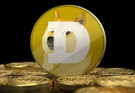

Top 3 Crypto Currencies in the world
| Image | Description |
|---|---|
 Bitcoin |
Bitcoin is one of the most popular crypto currency in the world today. It was invented by a group of people who goes under the pseudonym Satoshi Nakamoto in 2008. They wanted to have a decentralized digital currency but it is not stable due to little banks handling it. |
|  Dogecoin |
Dogecoin is also one of the most popular crypto currnecies in the world today. It was invented by billionare Elon Musk on 2013 because he wanted to make a light-hearted joke for the Crypto community. Dogecoin was also supported by a large number of people in the community like Snoop Dogg, Mark Cuban, etc. |
Binance Coin |
Binance coin is also one of the most popular crypto currencies in the world today. It is designed to facilitate trading process on Binance and was intially issued as an ERC-20 token. It was founded by Chinese-Canadian businessman Changpeng Zhao in 2017 but later resigned as CEO due to criminal charges. |
Sources:
Ai Blockchain Summit. (2024, April 15). Bitcoin for Dummies Guide: All you need to know about BTC. AIBC. https://aibc.world/learn-crypto-hub/bitcoin-for-dummies-guide/"
Yue, F., & Dogecoin, M. P. I. (2024, November 11). Dogecoin soars as altcoins look to benefit from Trump presidency. MarketWatch. https://www.marketwatch.com/story/dogecoin-soars-as-altcoins-look-to-benefit-from-trump-presidency-521d3982
Team, C. (2024, September 10). Dogecoin. Corporate Finance Institute. https://corporatefinanceinstitute.com/resources/cryptocurrency/dogecoin/ https://corporatefinanceinstitute.com/resources/cryptocurrency/dogecoin
undefined (undefined): Strengths, Weaknesses, Risks | CryptoEQ. (n.d.). https://www.cryptoeq.io/corereports/binance-coin-abridged https://www.cryptoeq.io/corereports/binance-coin-abridged
Van Den Boogaard, A. (n.d.). Binance Coin: everything you need to know about BNB. BLOX. https://weareblox.com/en-eu/binance-coin?utm_medium=search&utm_source=google https://weareblox.com/en-eu/binance-coin?utm_medium=search&utm_source=google
Morrow, A. (2023, November 22). What is Binance, why is it in so much trouble, and what does it mean for crypto? CNN. https://edition.cnn.com/2023/11/21/investing/what-is-binance-and-why-is-it-in-trouble/index.html https://edition.cnn.com/2023/11/21/investing/what-is-binance-and-why-is-it-in-trouble/index.html